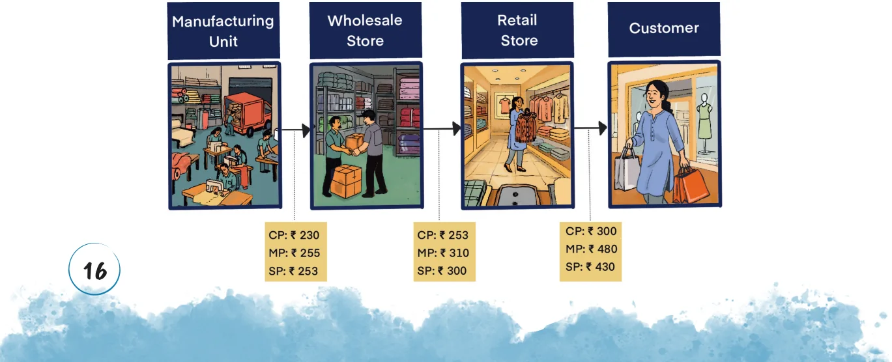
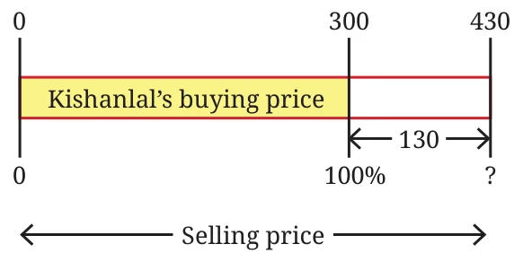
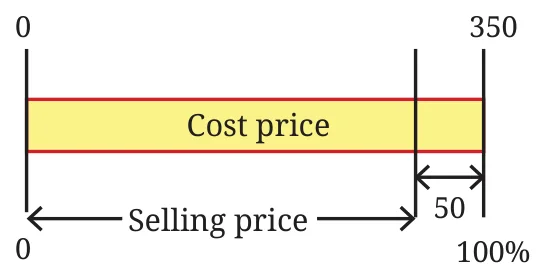
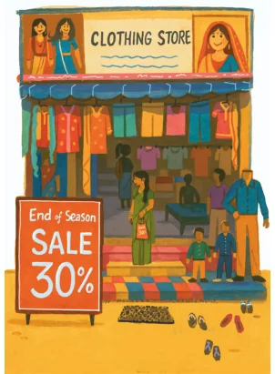
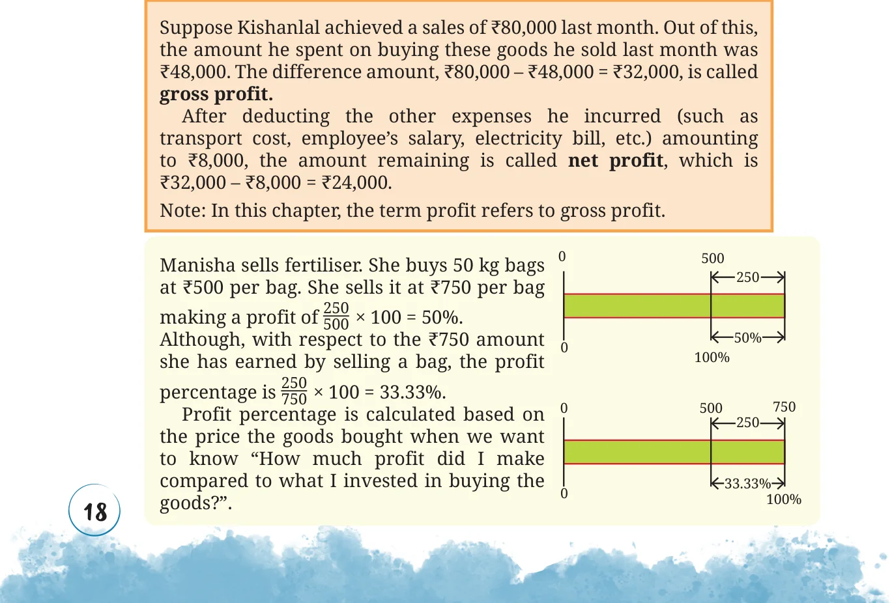

Percentages are often used to describe the rate of change of quantities. For example,
- Suppose the price of 1 kg tomatoes 3 years ago was ₹30, and the price now is ₹42. The increase in the price is ₹12.
$$\text{Percentage increase} = \frac{\text{amount of increase}}{\text{original amount or base}} \times 100$$
\(= \frac{12}{30} \times 100 = 40\%\).
We say the price of tomatoes increased by 40% over the last 3 years.

- The average footfall in this theater before COVID was 160. Now it is just 100. The decrease in the footfall is 60.
$$\text{Percentage decrease} = \frac{\text{amount of decrease}}{\text{original amount or base}} \times 100$$
\(= \frac{60}{160} \times 100 = 37.5\%\).
We say the footfall in this theater post-COVID has decreased by 37.5%.
Example 3: Do the following two statements mean the same thing?
- The population of this state in 1991 is 165% of that in 1961.
- The population of this state has increased by 65% from 1961 to 1991.
Yes, both mean the same. Suppose p is the population of the state in 1961 and q is the population of the state in 1991.
| Statement A implies, | Statement B implies, |
|---|---|
| \(q = 165\%\) of \(p\) \(q = \frac{165}{100} \times p = 1.65p\) |
\(q = p + 65\%\) of \(p\) \(q = p + 0.65 \times p = 1.65p\) |
In other words, the population of the state in 1991 is 1.65 times that in 1961.
Profit and Loss
You may have the experience of buying something - snacks, groceries, clothes, toys, etc. Very often, the shopkeeper quotes a price and after some bargaining the customer pays the negotiated amount and buys the item(s). We call the price quoted by the shopkeeper the marked price (sometimes this can be the MRP of an item). The price the customer pays after a discount is called the selling price. Also, the price the shopkeeper paid to purchase that item is called the cost price. Let us see how these labels are relative to the context through an example. The picture below shows the journey of a sweater from the manufacturer to the customer and what the cost price (CP), the marked price (MP), and the selling price (SP) mean in each step.


Kishanlal (retailer) buys sweaters from a wholesaler at a price of ₹300 per sweater. The marked price he quotes his customers is ₹480. After bargaining, he sells this sweater at ₹430.
Notice that the selling price is greater than the cost price, resulting in a profit of ₹430 − ₹300 = ₹130. If the selling price is less than the cost price, it will result in a loss.
Example 4: Find out the percentage profit Kishanlal made on this sweater.
We shall consider the cost price to be 100% to find out the percentage profit made with reference to the cost price. The following rough diagram describes this situation.

The profit amount is ₹130. The percentage profit is \(\frac{130}{300} \times 100 = 43.3\%\). Find the profit percentage of the wholesaler and the manufacturer.
Shambhavi owns a stationery shop. She procures 200 page notebooks at ₹36 per book. She sells them with a profit margin of 20%. Find the selling price.
She sells crayon boxes at ₹50 per box with a profit margin of 25%. How much did Shambhavi buy them from the wholesaler?
Example 5: The rice stock in Raghu’s provision store is getting old. He had purchased the rice at ₹35 per kg. To clear his stock, he sells 10 kg rice for ₹300. Find out the percentage loss.
The amount Raghu had paid towards buying the 10 kg rice is ₹350. He sold it for ₹300. The loss is ₹350 − ₹300 = ₹50.

The percentage loss is \(\frac{50}{350} \times 100 = 14.28\%\). Could we have just calculated the loss percentage per kg instead? Would it be the same?
Example 6: Shyamala had procured decorative vases at ₹2650 per piece. One of the pieces was slightly damaged. She decides to sell it at a loss of 18%. How much will she get by selling this piece?
Try making an estimate. Draw a rough diagram depicting the given situation.

Two methods of solving this are shown.
| With respect to the buying price being 100%, the selling price is 18% less than the buying price. That is, the selling price would be 82%. \(82\%\) of \(2650 = 0.82 \times 2650 = 2173\). |
The loss amount is 18% of 2650. That is, \(\frac{18}{100} \times 2650 = 477\). Reducing this from the buying price, \(2650 - 477 = 2173\). |
The sale amount of the damaged vase would be ₹2173.
Due to heavy rains, Snehal could not transport strawberries to Hyderabad from his farm in Panchgani. He sells some of his stock at ₹80 per kg with a 12% loss. What is the cost price?
You have probably seen percentages mentioned when shops offer discounts! Do you know what 30% off (or 30% discount) means? It means that the shop is willing to reduce the price of the item by 30%.

A utensil store is offering a 35% discount on the cooker with an MRP ₹1800. What is the selling price? If the cost price was ₹900, what is the percentage profit made after the sale?

Profit percentage is calculated based on the revenue (sales amount) when we want to know "How much (net) profit did I make on my overall revenue?". Suppose, in a month she made sales of ₹1,50,000. The cost of buying the goods was ₹1,00,000. So, the gross profit is ₹50,000. The monthly expenses amounted to ₹5,000. The net profit is ₹45,000. Out of monthly revenue (₹1,50,000), the net profit percentage is
\(\frac{45000}{150000} \times 100 = \frac{3}{10} \times 100 = 30\%\).